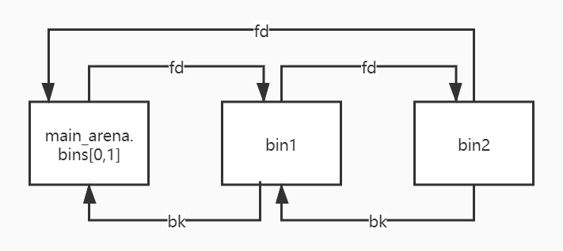
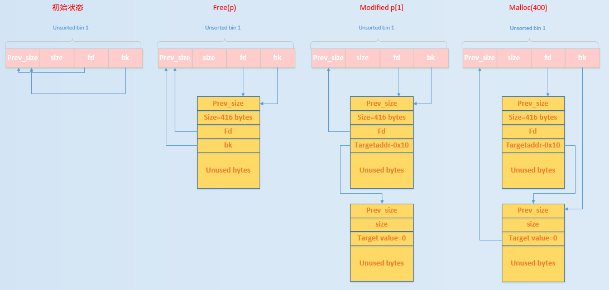

chunk overlapping
overlapping_heap_chunk
uaf
uaf
个人理解：uaf就是当此程序的结构体中有指针，然后虽然被free了，但是指针没有被清空，导致这个指针可以复用，因此可以修改为自己想执行的内容，然后执行 - 任意内存读写 - 如果 UAF 的位置被用于保存指针（如函数指针、对象 vtable 指针、结构体 fd/bk 指针），攻击者能把它改成任意地址。 - 结果是：在随后的访问中，程序会对攻击者指定的任意地址进行读写。 - 任意代码执行 - 如果 UAF 的对象里有函数指针或虚函数表（C++ 对象常见），攻击者可以把它改写为指向任意函数地址或 ROP 链。 - 这样在调用的时候，等同于“任意地址执行”。 - 信息泄露 - UAF 也经常被用来泄露内存布局（ASLR/堆地址/ libc 地址），为后续利用做准备。
fastbin attack
fastbin #任意地址写 #任意地址读
是指所有基于fastbin机制的漏洞利用方法，这类利用的前提是：
- 存在堆溢出、uaf等能够控制chunk内容的漏洞
- 漏洞发生于fastbin类型的chunk中
细分可分为
- fastbin double free
- houst of spirit
- alloc to stack
- arbitrary alloc
前两种侧重利用free函数释放**真的chunk或伪造的chunk**，然后再次申请chunk进行攻击
后两种侧重于故意修改fd指针，直接利用malloc申请指定位置chunk进行攻击
fastbin管理的chunk即使被释放，其next_chunk的prev_inuse位也不会被清空
double free
double_free
本质其实就是利用了：当前 chunk 的 fd 指针指向下一个 chunk。
就是通过double free实现多个指针指向一个堆块，因此可以实现指定堆块写，可以用来应对没有edit的菜单
因为我们可以通过double获得某个堆的二次写机会，因此可以改写fd为需要的地址，从而让下一个chunk被分配到栈上、bss上等等等等地址
这里的可以通过写的时候修改fd实现堆地址的迁移
注意保证size的大小是一致的
new(0x70,b'a')
new(0x70,b'a')
free(0)
free(1)
new(0x70,p64(target))
new(0x70,b'a')
new(0x70,b'a')
House of Spirit
house_of_spirit
在目标位置处伪造fastbin chunk，并将其释放，从而达到分配指定地址的**chunk**的目的
Alloc to Stack
alloc_to_stack
劫持fastbin链表中的chunk的fd指针，把fd指针指向我们想要分配的栈上，从而实现控制栈中的一些关键数据，比如返回地址等
通过该技术可以把fastbin chunk分配到栈中，从而控制返回地址等关键数据。要实现这一点需要劫持fastbin 中 chunk 的 fd 域，把它指到栈上，当然同时**需要栈上存在有满足条件的 size 值**
Arbitrary Alloc
arbitrary_alloc
分配的地址从栈上变成其它地方，bss、heap、data、stack等，通过字节错位等方法绕过size域的检验，实现任意地址分配 chunk，最后的效果相当于**任意地址写任意值**
unsortedbin attack
unosrtedbin_attack #任意地址大数据写
基本来源
1. 当一个较大的 chunk 被分割为两半后，如果剩下的部分大于MINSIZE，就会被放到unsorted bin中
2. 释放一个不属于fastbin的chunk，并且该chunk不和top chunk紧邻时，该chunk会被首先放到unsorted bin中
3. 当进行malloc_consolidate中时，可能会把合并后的chunk放到unsorted bin中
基本使用情况 1. unsorted bin在使用的过程中采用的遍历顺序是FIFO，即插入的时候插入到unsorted bin的头部，取出的时候从链表尾获取 2. 在程序malloc的时候，如果在fastbin，smallbin中找不到对应大小的chunk，就会尝试从unsortedbin中寻找chunk。如果取出的chunk大小刚好满足，就会直接返回给用户，否则就会把这些chunk分别插入到对应的bin中
如何使用unsortedbin进行leak
unsorted bin在管理时为双向链表，若ub中有两个bin，那么链表结构如下：

我们可以看到链表必定有一个节点的fd指针会指向main_arena内部
如果我们可以把正确的fd指针leak出来，就可以获得一个与main_arena有固定偏移的地址
而main_arena是一个struct malloc_state类型的全局变量，是ptmalloc管理主分配去的唯一实例
而全局变量会被分配到.data或者.bss等段上，那么如果我们有进程所使用的libc的.so文件的话，我们就可以获得main_arena与libc基地址的偏移，实现对\(ASLR\)的绕过
main_arena和__malloc_hook的地址差是0x10，大多数libc都可以直接查出来__malloc_hook的地址，所以很容易得到：
libc = ELF('libc.so.6')
main_arena_offset = libc.sym['__malloc_hook']+0x10
实现leak的方法
要实现leak，需要有UAF，将一个chunk放入ub后再打出其fd。然后通过题目给的show函数，将链表尾的节点show出来就可以leak libc了
unsorted bin attack原理
在glibc/malloc/mlloc.c中的_int_malloc中有一段代码，将一个ub取出的时候，会将bck->fd的位置写入本ub的位置
/* remove from unsorted list */
if (__glibc_unlikely (bck->fd != victim))
malloc_printerr ("malloc(): corrupted unsorted chunks 3");
unsorted_chunks (av)->bk = bck;
bck->fd = unsorted_chunks (av);
也就是说，只要可以控制bk的值，就可以将unsorted_chunks(av)写到任意地址

- 初始状态时：ub的fd和bk均指向ub自身 - 执行free(p)：释放的chunk大小不属于fastbin，放入到ub中 - 修改\(p[1]\)：原本在ub中的p的bk指针指向target_addr-0x10处伪造的chunk，即target value处于伪造chunk的fd中 - 申请400大小的chunk：此时，所申请的chunk处于smallbin所在的范围，其对应的bin中暂时没有chunk，所以会去ub中找，发现ub不空，于是把ub中的最后一个chunk拿出来应用： - 修改循环次数 - 修改heap中的global_max_fast来使得更大chunk可以被视为fastbin，可以打fastbin attack
Tcache attack
tcache_attack
源码
tache中新增了两个结构体tache_entry和tache_perthread_struct
/* We overlay this structure on the user-data portion of a chunk when the chunk is stored in the per-thread cache. */
typedef struct tcache_entry
{
struct tcache_entry *next;
} tcache_entry;
/* There is one of these for each thread, which contains the per-thread cache (hence "tcache_perthread_struct"). Keeping overall size low is mildly important. Note that COUNTS and ENTRIES are redundant (we could have just counted the linked list each time), this is for performance reasons. */
typedef struct tcache_perthread_struct
{
char counts[TCACHE_MAX_BINS];
tcache_entry *entries[TCACHE_MAX_BINS];
} tcache_perthread_struct;
static __thread tcache_perthread_struct *tcache = NULL;
有两个重要函数tacche_get()和tcache_put()
// 将一个 chunk 放入对应的 tcache bin 中
static void
tcache_put (mchunkptr chunk, size_t tc_idx)
{
// 将 chunk 转换为用户数据区指针，再强制转为 tcache_entry 类型
tcache_entry *e = (tcache_entry *) chunk2mem (chunk);
// 确认 tc_idx 在允许的范围内 (防止越界)
assert (tc_idx < TCACHE_MAX_BINS);
// 将当前 tcache bin 的头插法链表操作：新节点的 next 指向原来的头
e->next = tcache->entries[tc_idx];
// 更新该 bin 的头指针为新插入的 e
tcache->entries[tc_idx] = e;
// 计数器加 1，表示该 bin 中 chunk 数量增加
++(tcache->counts[tc_idx]);
}
// 从指定 tcache bin 中取出一个 chunk
static void *
tcache_get (size_t tc_idx)
{
// 获取该 bin 的链表头，即最近一次插入的 chunk
tcache_entry *e = tcache->entries[tc_idx];
// 检查下标合法性
assert (tc_idx < TCACHE_MAX_BINS);
// 确保该 bin 不为空 (否则就是逻辑错误)
assert (tcache->entries[tc_idx] > 0);
// 更新链表头为下一个节点 (相当于弹出栈顶元素)
tcache->entries[tc_idx] = e->next;
// 计数器减 1，表示该 bin 中 chunk 数量减少
--(tcache->counts[tc_idx]);
// 返回取出的节点地址 (即用户可用的内存区域)
return (void *) e;
}
这两个函数会在_int_free和__libc_malloc的开头被调用
其中tcache_put当所请求的分配大小不大于\(0x408\)并且给定大小的tcachebin未满时调用
**一个tcachebin中最大的块数mp_.tcache_count是 7
在tcache_get中，仅仅检查了**tc_idx**
此外，我们可以将tcache当作一个类似于fastbin的单独链表，只是它的check没有fastbin那么复杂，仅仅检查了tcache->entries[tc_idx] = e->next